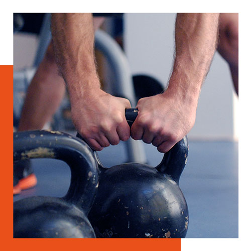

Sprich mit einem Coach. Setze deine Ziele. Mache einen Plan.
die box
Endlich eine Box im Süden von Berlin! Du kommst aus Marienfelde,
Lichtenrade, Mariendorf oder Mahlow? Dann ist zündstoff CrossFit dein
place to be!
Wir sind für dich auch aus anderen Bezirken super erreichbar.
Vom Südkreuz bist du in 15 Minuten mit den Öffis bei uns.
Unsere umgebaute Industriehalle erwartet dich und bietet viel Platz zum Trainieren,
Freunde treffen, fitter und gesünder werden.
Du wirst arbeiten. Du wirst schwitzen. Du wirst Muskelkater haben. Es wird sich lohnen.
Du wirst deine Grenzen verschieben. Du wirst Fortschritte
machen. Du wirst beweglicher.Du wirst stärker. Du wirst dich besser fühlen.
Das alles machst du mit hochwertiger Ausstattung und unter professioneller
Anleitung. Kein Schnickschnack.
Neugierig? Komm vorbei!
Hier ist zündstoff.
zündstoff für dich
unser Kursplan
wod
Workout of the Day. Das ist CrossFit in Reinform.
Ein CrossFit Kurs hat 60 Minuten. Nach einem
Warm up gibt es oft einen Skill-oder Kraftteil.
Danach ein Workout und schließlich das Cool Down.
Das Workout ist je nach Zielsetzung unterschiedlich
lang und besteht aus
unterschiedlichen Übungen. Variabel und
intensiv.
basics
Diese Einführungskurse führen dich an CrossFit-
typische Übungen heran.
Du lernst hier neue
Bewegungen und Techniken für dein CrossFit
Training und wie du sie für
dich anpassen kannst.
Fitter wirst du nebenbei.
strength
Du möchtest Kraft aufbauen und deine Bewegung verbessern?
Beugen und drücken, heben und ziehen. Die Kraft-Grundübungen
und Gewichtheben stehen hier im Fokus. Wir arbeiten in erster
Linie an korrekter Ausführung der Kraftübungen und der Technik für Snatch
und Clean and Jerk.
“Every day without squatting is a day closer to the day you can’t squat.”
das training
Was ist CrossFit? Kann ich das?
Ja, du kannst. Jeder kann das - unabhängig vom Alter oder Fitnesslevel. Wir
holen dich da ab, wo du stehst.
CrossFit Training bedeutet hochintensives und variables Training. Alle
Bereiche (u.a. Kraft, Schnelligkeit, Ausdauer, Koordination) werden
angesprochen und verbessert. Durch das Programming kommt sinnvolle
Abwechslung in die Trainingstage.
Du dokumentierst deine Ergebnisse und Zeiten in einer App (wir nutzen
SugarWOD). Damit werden auch kleine Veränderungen sichtbar.
Jedes Training kann an jedes Fitnesslevel angepasst werden. So ist es
möglich, verschiedene Level in einer Gruppe zu trainieren und gemeinsam
das Workout zu beenden. High Five für alle. Der Letzte bekommt den
a lautesten Applaus. Du bist nicht allein.
Das ist CrossFit. Das ist zündstoff.
preise & aktuelles
Wir bieten Mitgliedschaften an,
die sich nach deinen Zielen und Bedürfnissen unserer Member richten.
Erfahre mehr über unsere Preise und klicke auf den Link.
newsletter
Stay tuned! Melde dich für unseren Newsletter
an und wir informieren dich regelmäßig über den aktuellen
Trainingszyklus, bevorstehende Events oder andere wichtige
News aus der Box.
gutschein
Du möchtest einen Gutschein verschenken? Gute Idee!
Du entscheidest selbst, welchen Wert der Gutschein haben soll.
Einfach dem Link folgen. Motiv auswählen. Betrag eingeben. Easy.
drop-in
Einmal trainieren und die Box ausprobieren. Perfekt für alle,
die kurz in der Stadt sind. Melde dich einfach direkt über unseren Kursplan an.
starte heute
CrossFit ist noch neu für dich?
Du suchst nach einer neuen Box?
Du brauchst einen Funken um deine Flamme zu entzünden?
Sprich mit einem Coach. Setze deine Ziele. Mache einen Plan.
gruppentraining
Werde gesünder.
Schliesse Freundschaften.
Sei glücklicher.
Werde Teil unserer Gemeinschaft und erreiche deine Ziele schneller mit Gruppentraining.
personal training
Echte Resultate, nur schneller.
Arbeite mit einem unserer erfahrenen Coaches,um
deine Ziele schneller zu erreichen und erhalte die
die du verdienst.

mission
Bleib gesund! Das hört man sehr oft. Gesundheit ist vielleicht das höchste Gut. Aber was bedeutet das? Bedeutet gesund sein gerade keinen Schnupfen zu haben? Oder bedeutet es mehr?
Wir glauben, zum gesund sein gehört etwas mehr – mehr als nur gerade keine Krankheit zu haben. Wir glauben dazu gehört auch sich wohlzufühlen, zufrieden mit sich zu sein, sich stark zu fühlen.
Die Steigerung ist Fitness: das Gefühl gewappnet zu sein, für was auch immer da kommen mag. Zu keiner Zeit im Leben wird uns das geschenkt. Wir müssen etwas dafür tun. Auch im hohen Alter. Ausgewogene Ernährung und Bewegung – das würde wohl jeder raten.
Du willst die U-Bahn Treppe hochgehen, ohne danach eine Pause zu brauchen? Du willst ohne Stöhnen von der Couch aufstehen? Du willst auch mit 80+ ohne Hilfe vom Klo aufstehen? Was hält dich zurück? Fang jetzt an.
Hier ist zündstoff.